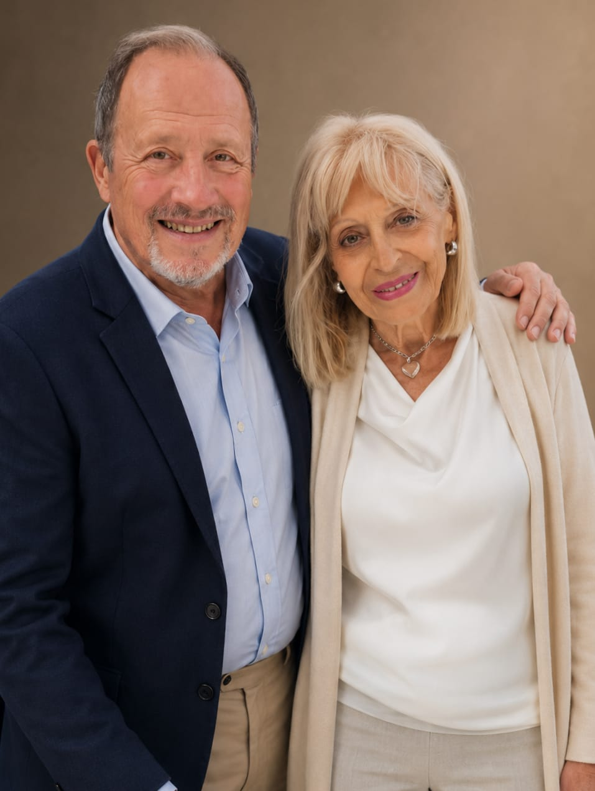
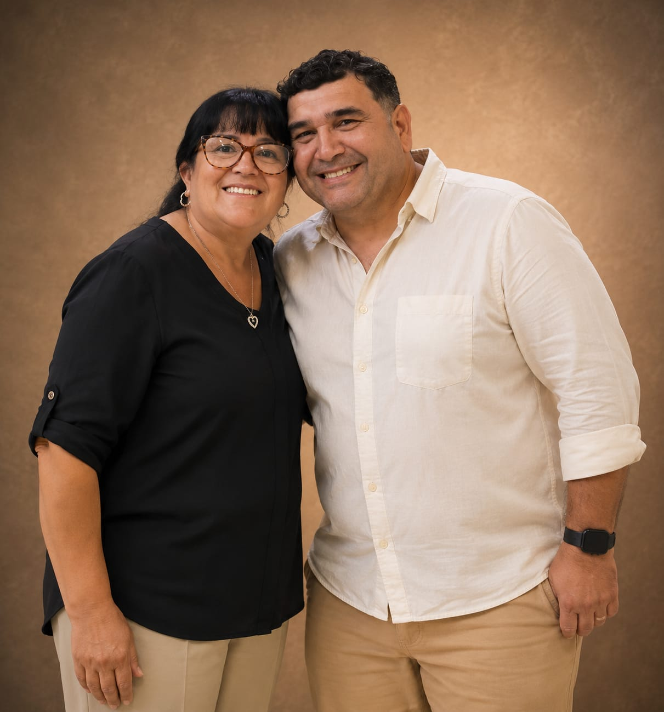

Bienvenido a Ciudad Deseada
Una comunidad de fe, donde el amor por las almas y la presencia de Dios transforman vidas. Tu lugar está aquí.
Nuestros Comienzos
La historia de nuestra iglesia no comenzó en un gran templo, ni rodeada de multitudes. Comenzó de la manera más sencilla y más poderosa: con fe, obediencia y un profundo amor por las almas.
Corría el año 1986 cuando los pastores Miguel y su esposa, comenzaron a reunirse en un pequeño garage de la ciudad de Wilde. En aquellos primeros encuentros apenas eran seis personas, pero había algo mucho más grande que los números: había pasión por predicar el Evangelio y alcanzar a quienes más lo necesitaban.
Con sus hijos pequeños —Leonardo, Daniela y Adrián— viajaban constantemente desde Caballito hacia Wilde. Martes, jueves, sábados y domingos tomaban el colectivo llevando no solamente Biblias y esperanza, sino también a toda su familia a cuestas. Muchas veces las reuniones terminaban tarde, pero para ellos el horario nunca fue una limitación cuando había personas esperando una palabra de aliento, una oración o simplemente alguien que los escuchara.
"Aquellos años estuvieron marcados por el sacrificio, el esfuerzo y una convicción inquebrantable: Dios había llamado a esta familia a predicar el Evangelio en Wilde."
Poco tiempo después ocurrió algo que cambiaría la historia para siempre. Un pastor de Estados Unidos, llamado Esteban Hill, tomó contacto con ellos y les prometió ayuda para levantar la iglesia. Pasaron los meses y, humanamente, parecía que aquella promesa se había perdido en el tiempo. Sin embargo, cuando menos lo esperaban, esa ayuda llegó.
Gracias a ese apoyo se concretó la compra del terreno donde comenzaría a levantarse la iglesia. Y apenas días más tarde llegó un contingente de misioneros estadounidenses que decidió usar sus vacaciones no para descansar, sino para trabajar como albañiles y ayudar a construir la casa de Dios. Con sus propias manos comenzaron a levantar paredes, techos y sueños.
Hombres y mujeres como Ani, Catalino, Teresa y muchos otros comenzaron a trabajar arduamente para el crecimiento de la obra. Cada ladrillo tenía detrás oración, esfuerzo y amor por las personas.
En 1988 nació Santiago, en medio de una iglesia que seguía creciendo entre luchas, desafíos y milagros. Porque si algo caracterizó siempre al pastor Miguel fue su pasión incansable por las almas. Muchos pastores y líderes reconocieron públicamente ese amor genuino por la gente, destacando su entrega, humildad y compromiso con aquellos que más necesitaban de Dios.
Nuestra historia no está construida solamente sobre paredes o reuniones. Está construida sobre vidas transformadas, familias restauradas, lágrimas convertidas en esperanza y generaciones enteras alcanzadas por el amor de Cristo.
Y así como comenzó en un pequeño garage con apenas seis personas, hoy seguimos creyendo lo mismo que en aquel primer día: que una vida vale todo el esfuerzo.
Con el paso de los años, la obra continuó creciendo y expandiéndose, siempre sostenida por la misma visión y pasión que dieron origen a aquellos primeros encuentros en Wilde. Hoy, nuevas generaciones siguen tomando la posta y trabajando con compromiso para que el mensaje de Jesús continúe llegando a más personas. Pastores y colaboradores como Estela y Fabián Romero forman parte activa de este crecimiento, sirviendo con dedicación, amor y entrega en cada área de la iglesia. Porque la misión sigue viva: anunciar esperanza, abrazar al necesitado y continuar construyendo una comunidad donde cada persona pueda encontrarse con Dios.


Nuestras Reuniones
Te esperamos para compartir un tiempo especial en la presencia de Dios.
Reunión Semanal
Un tiempo en medio de la semana para renovar fuerzas y escuchar la Palabra.
Reunión de Jóvenes
Un espacio dinámico para que los jóvenes conecten con su propósito y con Dios.
Reunión de Niños
Enseñanza bíblica divertida y adaptada para los más pequeños de la familia.
Reunión General
El día principal de celebración para adorar a Dios en familia.
Grupos de Células
Reuniones íntimas en casas. Contáctanos para encontrar la célula más cercana a tu hogar.
Noticias y Boletines
Entérate de las últimas novedades de la congregación.
Dónde Encontrarnos
Te invitamos a ser parte de nuestra familia. Estamos ubicados en Wilde, acércate y conoce lo que Dios tiene preparado para ti.
Dirección
Víctor Hugo 860, Wilde, Buenos Aires
ciudaddeseada.iglesia@gmail.com